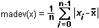
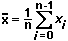
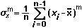
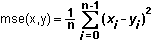
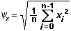
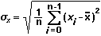
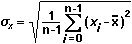
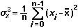
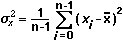

The functions compute the discrete histogram of the specified data set.
histx(x ,n)
histy(x ,n)
The histx function returns X values of the histogram computed on n intervals. The X values is an 1D array that has size n. Elements of X values are computed by the formula:
X[i] = min + 0.5*dx + i*dx for i=0,1,..., n-1
, where
dx = (max-min)/n ,
min is the minimum value found in x ,
max is the maximum value found in x.
The histy function returns Y values of the histogram computed on n intervals (histigram value). The Y values is an 1D array that has size n. Each element of the Y values (Y[i]) contains number of elements in x that meet the condition:
X[i]-dx x X[i]+dx for i=0,1,..., n-1
If x is an empty array, or n is less than or equal to 0, the both functions return NaN.
x can have any of the following data types:
| DBL Number | 1D Array of DBL | 2D Array of DBL |
n (number of intervals) is the optional parameter that can be omitted in a function call. By default, n is equal to size(x)/2. If n is less than 1, it assumes to be 1.
If n is present in a function call, it must have the DBL Number data type.
click here for general information on data types.
Both functions return a value that has the 1D Array of DBL data type.
x = GWNoise(10000,2); /*generates Gaussian white noise*/
N = 50;
XYGraph(0, histx(x,N), histy(x,N)); /*shows the histogram*/
The function computes the Mean Absolute Deviation of the input data set.
madev(x)
The function returns the mean absolute deviation of the values in x. If x is an empty array, the function returns NaN.
The function can operate on the following data types:
| DBL Number | 1D Array of DBL | 2D Array of DBL |
click here for general information on data types.
The function returns a value that has the DBL Number data type.
The function computes the Mean Absolute Deviation of x using the formula:

, where n is number of elements in x, and is the mean of x values:

mean(x1 ,x2 ... ,xn)
The function can operate on an arbitrary non-zero number of arguments; herewith, it considers all the actual parameters as a single aggregate data set.
The function returns the mean of all the elements in the aggregate data set. The mean is computed using the formula sum(X)/N, where X is the aggregate data set, and N is the number of elements in the aggregate data set.
The function can operate on scalars, arrays, and any combinations thereof. Formally, it works on the following data types:
| DBL Number | 1D Array of DBL | 2D Array of DBL |
| CDB Number | 1D Array of CDB | 2D Array of CDB |
click here for general information on data types.
The function returns a scalar value. The value has the DBL Number data type if all of the actual parameters have a real representation (DBL). If there is a parameter with a complex representation (CDB), the return value has the CDB Number data type.
x = 5;
v = vector(10,20,30); //v is array {10,20,30}
mean(v); //returns 20
mean(x,6,7); //returns 6
mean(v,x,15); //returns 16
The function searches for the Median in the input data set.
median(x)
The function returns the median value in x. To find the median value, the function sorts values of x, and then returns either the middle element of the sorted array, if x consists of odd number of elements, or the average of the two middle elements, if x contains even number of elements.
If x is an empty array, the function returns NaN.
The function can operate on the following data types:
| DBL Number | 1D Array of DBL | 2D Array of DBL |
click here for general information on data types.
The function returns a value that has the DBL Number data type.
mode(x ,n)
The function returns the mode of x. To find the mode of x, the function computes the discrete histogram of x with the n intervals and then searches for the interval that has maximum histogram value (Y value). The function returns the central value of the found interval (X value) as the mode of x. For more information see description of histogram functions.
If x is an empty array, or n is less than or equal to 0, the function returns NaN.
x can have any of the following data types:
| DBL Number | 1D Array of DBL | 2D Array of DBL |
n (number of intervals) is the optional parameter that can be omitted in a function call. By default, n is equal to size(x)/2. If n is less than 1, it assumes to be 1.
If n is present in a function call, it must have the DBL Number data type.
click here for general information on data types.
The function returns a value that has the DBL Number data type.
The function computes the specified moment about the mean of the input data set.
moment(x,m)
The function returns the m-th order moment about the mean of x. If x is an empty array, or m is less than or equal to 0, the function returns NaN.
x can have any of the following data types:
| DBL Number | 1D Array of DBL | 2D Array of DBL |
m must have the DBL Number data type.
click here for general information on data types.
The function returns a value that has the DBL Number data type.
The function computes the m-th order moment of x using the formula:

, where n is number of elements in x, and is the mean of x values:
The function computes the Mean Squared Error (MSE) of two data sets.
mse(x,y)
The function returns the mean squared error of x and y.
If number of elements in x is different from number of elements in y, the function computes MSE based on the smallest of them. If x or y is an empty array, the function returns NaN.
Note that if both x and y are 2D arrays, the function does not pay attention on dimension sizes. It considers 2D array like 1D array that contains the same number of elements as the original 2D array, and is produced by concatenation of rows of the original 2D array (i.e. it contains elements of the first row, then elements of the second row, etc.).
x and y must have the same type that can be any of the following:
| DBL Number | 1D Array of DBL | 2D Array of DBL |
click here for general information on data types.
The function returns a value that has the DBL Number data type.
The function computes the MSE of x and y using the formula:

, where n is the smallest number of elements in x and y.
The function computes the Root Mean Square (RMS) of the input data set.
rms(x)
The function returns the RMS of the values in x. If x is an empty array, the function returns NaN.
The function can operate on the following data types:
| DBL Number | 1D Array of DBL | 2D Array of DBL |
click here for general information on data types.
The function returns a value that has the DBL Number data type.
The function computes the Root Mean Square of x using the formula:

, where n is number of elements in x.
The function computes the Standard Deviation of the input data set.
stdev(x)
The function returns the standard deviation of the values in x. If x is an empty array, the function returns NaN.
The function can operate on the following data types:
| DBL Number | 1D Array of DBL | 2D Array of DBL |
click here for general information on data types.
The function returns a value that has the DBL Number data type.
The function computes the standard deviation of x using the formula:

, where n is number of elements in x, and is the mean of x values:
The function computes the Sample Standard Deviation of the input data set.
_stdev(x)
The function returns the sample standard deviation of the values in x. If x contains less than two elements, the function returns NaN.
The function can operate on the following data types:
| DBL Number | 1D Array of DBL | 2D Array of DBL |
click here for general information on data types.
The function returns a value that has the DBL Number data type.
The function computes the sample standard deviation of x using the formula:

, where n is number of elements in x, and is the mean of x values:
var(x)
The function returns the variance of the values in x. If x is an empty array, the function returns NaN.
The function can operate on the following data types:
| DBL Number | 1D Array of DBL | 2D Array of DBL |
click here for general information on data types.
The function returns a value that has the DBL Number data type.
The function computes the variance of x using the formula:

, where n is number of elements in x, and is the mean of x values:
The function computes the Sample Variance of the input data set.
_var(x)
The function returns the sample variance of the values in x. If x contains less than two elements, the function returns NaN.
The function can operate on the following data types:
| DBL Number | 1D Array of DBL | 2D Array of DBL |
click here for general information on data types.
The function returns a value that has the DBL Number data type.
The function computes the sample variance of x using the formula:

, where n is number of elements in x, and is the mean of x values: